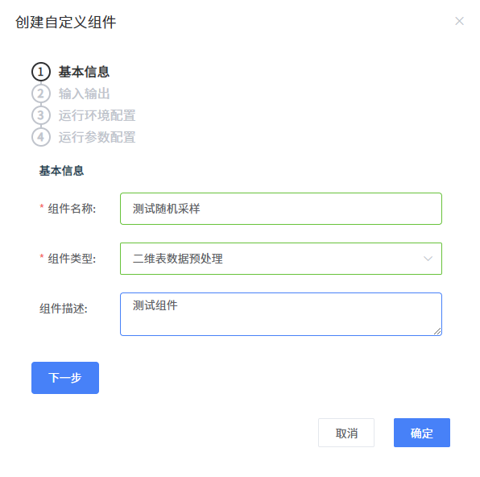
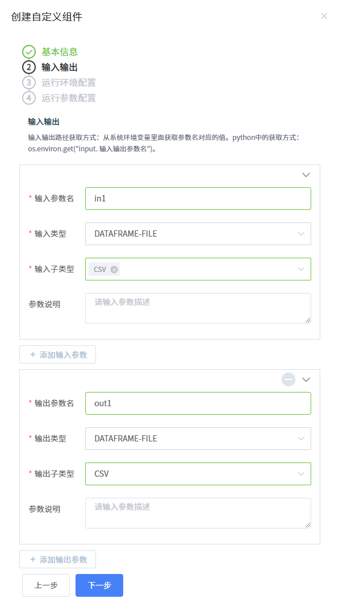
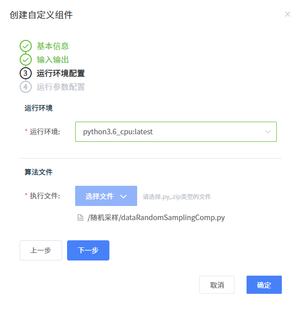
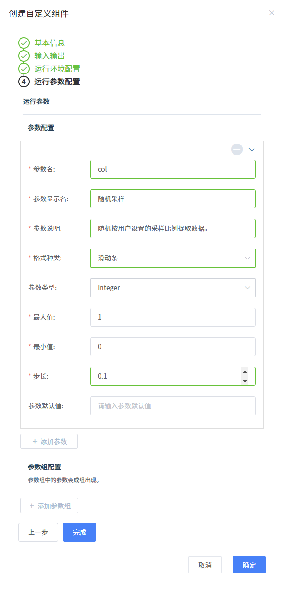
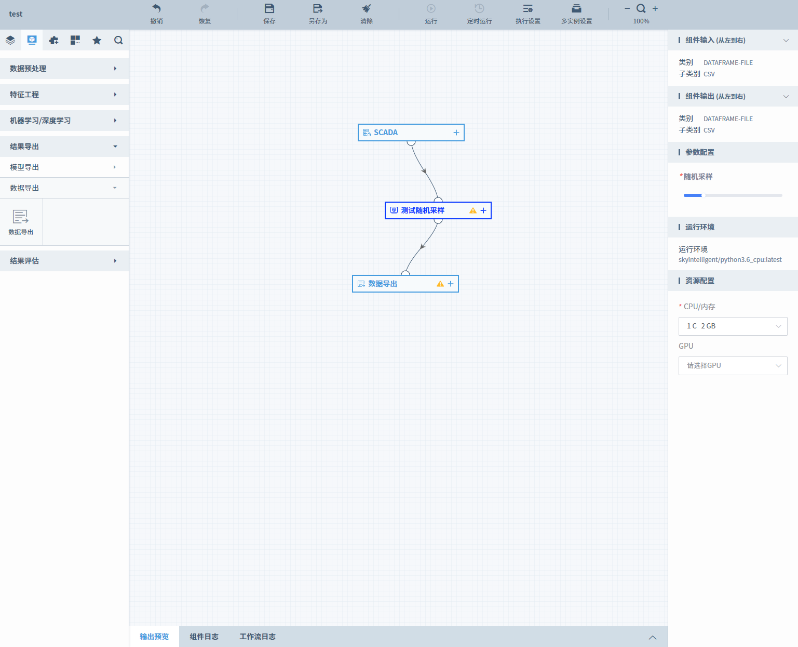

你可以自定义一个组件
该平台支持用户使用Python、Spark框架将自己开发的算法封装为自定义组件。
背景信息
SkyFlow平台支持用户定义自己的组件，用户可通过自定义组件模板创建自己的组件。
自定义的组件可以进行分享、收藏等操作。
如何自定义组件
准备自定义组件需要的py文件。
import argparse import os import pandas as pd import numpy as np import logging logging.basicConfig(level=logging.DEBUG, format='%(asctime)s %(filename)s[line:%(lineno)d] %(levelname)s %(message)s', datefmt='%a, %d %b %Y %H:%M:%S') if __name__=="__main__": env_dict = os.environ # 获得环境变量，工作流引擎会把输入输出的路径配置到环境变量中，输入输出的路径是从环境变量中拿到的 input_in1 = env_dict.get("input.in1") # 对应api中 "inputParams": [{"name": "in1", "ptype": "DATAFRAME", "ftype": ""},] in1前面加上'input.' output_out1 = env_dict.get("output.out1") # 对应api中 "outputParams": [{"name": "out1", "ptype": "DATAFRAME", "ftype": ""}] out1前面加上'output.' parse = argparse.ArgumentParser() parse.add_argument('--col1', type=float, help='rate') # 对应api中params "ename":"col1", args = parse.parse_args() rate = args.col1 # 控制输入在0-1之间 try: #rate = eval(col1) #rate = float(rate) if rate>1 or rate<0: raise ValueError logging.info('unexpected rate value, it should between 0 and 1') except: raise ValueError logging.info('unexpected rate type ') file_list = [item for item in os.listdir(input_in1) if item.endswith(".csv")] input_path = os.path.join(input_in1, file_list[0]) print(input_path) df = pd.read_csv(input_path,encoding = 'utf-8',sep = '\n') logging.info("read csv finish") logging.info("initial data shape is ({},{})".format(df.shape[0], df.shape[1])) length = len(df) num_sample = int(np.round(length * rate)) index = np.random.permutation(length)[0:num_sample] out_df = df.ix[index] logging.info("after sampling, data shape is ({},{})".format(out_df.shape[0], out_df.shape[1])) out_df.to_csv(os.path.join(output_out1,'res_nandeling.csv'), encoding = 'utf-8',sep = '\n') logging.info('successful output to res_nandeling.csv')配置自定义组件相关信息信息。
基本信息配置如下图。

输入输出配置如下图。

运行环境配置如下图。

运行参数配置如下图。

单击“完成”。
你可以验证一下自定义组件
将自定义组件从组件库中拖入画布中。
